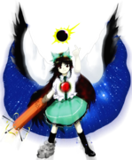

Utsuho é frequentemente vista como:
Avoadada – tem uma memória muito curta e se esquece facilmente das coisas.
Leal – possui uma devoção imensa à sua mestra, Satori Komeiji.
Impulsiva – quando ganha um objetivo, age sem medir a gravidade de suas ações.
Ela transmite a sensação de uma criatura inocente e puramente instintiva, que acabou recebendo um poder grande demais para si mesma.
🧠 Inteligência limitada (Pássaro)
Utsuho (ou Okuu) não é conhecida por seu intelecto:
É extremamente ingênua e fácil de ser manipulada
Sua mente é frequentemente comparada à de um pássaro
Mal-entendidos simples podem fazê-la tomar decisões extremas
Apesar disso, ela executa suas tarefas diárias no Subterrâneo com dedicação.
🐦⬛☢️ Orgulho e Poder
Após absorver o deus corvo Yatagarasu, ela desenvolveu um lado imponente:
Ficou fascinada pelo poder da fusão nuclear
Teve delírios de grandeza sobre dominar a superfície
Fica extremamente animada e barulhenta em combate
Sua megalomania temporária é fruto de sua mente simples lidando com energia divina.
🪨 Vida no Subterrâneo
Utsuho vive e trabalha nas profundezas do inferno antigo:
Cuida do Hell of Blazing Fires (Inferno das Chamas Ardentes)
Convive com os animais de estimação do Palácio dos Espíritos da Terra
Mantém a temperatura do subsolo regulada
Ela prefere o calor extremo, ambiente onde suas habilidades nucleares operam perfeitamente.
🤝 Relação com os outros
Utsuho interage principalmente com os habitantes do subsolo:
É a melhor amiga de Rin Kaenbyou (Orin)
Obedece cegamente às ordens de Satori Komeiji
Costuma assustar invasores da superfície sem querer, apenas por ser intensa demais
No fundo, ela não tem maldade e volta a ser um corvo manso assim que a poeira abaixa.
Reguladora do Inferno das Chamas Ardentes
Utsuho é um corvo infernal cuja principal função é alimentar e controlar o fogo do antigo inferno para manter o equilíbrio do Subterrâneo.
Estimação de Satori
Além de seu trabalho com a fornalha, ela é um dos animais de estimação leais que habitam o Palácio dos Espíritos da Terra.
Manipulação de Fusão Nuclear
O poder de Utsuho é um dos mais destrutivos de Gensokyo:
Pode gerar calor e luz equivalentes a um pequeno sol
Cria e dispara projéteis de energia termonuclear gigantescos
Consegue manipular a própria gravidade através de campos de atração e repulsão
Esse poder foi concedido a ela pelo deus Yatagarasu que habita em seu corpo.
Controle de alta temperatura
Ela consegue elevar a temperatura ambiente a níveis extremos, derretendo quase tudo ao seu redor.
Voo
Usando suas asas de corvo, Utsuho voa com grande velocidade, pairando sobre o campo de batalha como um sol vivo.
Uso do "Third Leg" (Terceira Perna / Canhão de Controle)
Utsuho utiliza o canhão acoplado ao seu braço direito para focar, mirar e controlar suas explosões nucleares com segurança.
Sua combinação de mente simplória com o poder literal de uma estrela faz dela uma das oponentes mais perigosas e imprevisíveis de se enfrentar.

Espécie: Corvo do Inferno (Hell Raven / Yatagarasu)
Título: A Chama Divina Ardente e Problemática